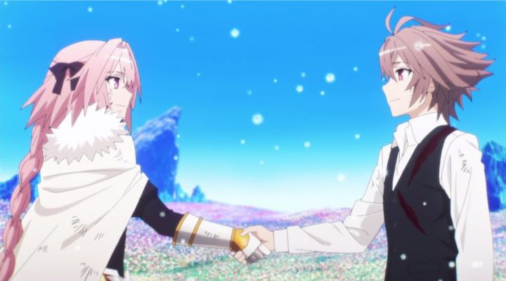

The "Fate" franchise (originating from the visual novel "Fate - Stay Night" from the Type Moon multiverse) had a troubled start in animation, but eventually found their footing with "Fate - Zero" in 2011, by studio Ufotable. Critically and commercially, it was successful enough to reignite interest, which only seemed to grow in Ufotable's further adaptations and remakes of the core story. But there are only so many times you can tell the same story, and only so many times you can tell a prequel or sequel, before interest wanes. To keep momentum, the franchise producers became open to adapting entirely separate spin-offs, each by different animation studios (Ufotable would be too busy to animate all of them). It wasn't an unusual idea: there were already multiple light-novels, manga and visual novel spin-offs to use as source material to expand this complex universe. So they came in quick succession: "Fate - Apocrypha" in 2017, "Fate - Extra Last Encore" in 2018, and "Fate - Grand Order - blablabla" in 2019 (these don't include multiple OVAs and films... completionists must loathe the franchise by now)."Fate - Apocrypha" has the reputation of being one of the darkest stories of an already dark series. It's also arguably the most fun among them. It's also confusing for a number of reasons. The first reason is that it is truly a spin-off, taking place in the future of an alternate timeline to "Fate - Zero" and "Fate - Stay Night"... and yet, it retains multiple callbacks, either to specific characters being shown in flashbacks in relation to new servants, or with new characters with names and appearances that resemble existing ones. You could enter the show blind, or enter with the vast knowledge of the stories that came before, and get different emotions. While either is valid, I do recommend the series to those who have specifically already seen "Fate - Zero," and possibly one of the "Fate - Stay Night" adaptations. But regardless, you'll still be confused either way, no matter how prepared you feel.Another matter of confusion is the plot premise. In this world, the Holy Grail War, where selected mages secretly summon heroric spirits from history to fight to the death in order to win an object capable of granting any one wish, hasn't occured for many decades after a failed previous war. But suddenly, it has begun again, when rumors of a "Greater Grail" from the previous war reimerging begin to circulate. The rules this time are different: instead of seven mages, there are now fourteen, set on two sides of seven, labelled "Black" and "Red." They must summon heroes and fight against the opposing side: when a winning side is determined, they will continue to fight against each other to declare a single victor. There's also yet a fifteenth hero summoned, as the "Ruler" class, meant to serve as an impartial observer... for reasons she herself doesn't quite understand. The exact reason why the participant count doubled is never satisfactorily explained, although one could also argue that even the rules of the "standard" war doesn't make sense. It's a massive cast of characters, with one of the most interesting aspects being that neither side appears to be "the bad one." This remains true even when the antagonist appears to be revealed halfway through the 25-episode series, since their motivations aren't entirely horrid (even though it boils down to the common anime-argument of what it really means to "save humanity"). Unlike other "Fate" stories, you'll likely not be concerned with the backstory or motivations of each character, as simply keeping track of them and the sides they fight for is enough work to do. The heroes also tend to switch sides and masters too often. Plotholes abound, seemingly only to allow for a dramatic moment or two. The REAL story doesn't even concern the initial main cast, but rather involves a homunculus named Sieg, initially intended to serve as a source of magical mana, but instead released to be free, only to return back to save his fellow homunculi and become a crucial part of the war... yikes.Simply put, even though the writing and direction tries to make the story meaningful, from a critical perspective, it's just plain stupid. What it does succeed in is in providing an emotional excuse for a fight to occur in any given moment. The story of "Fate - Apocrypha" might not be good, but it is engaging. Keep in mind this applies to the main cast, and not necessarily the result of their actions to the world around them. "Apocrypha" has a massive body count, of both humans and fake-humans being stabbed, ripped apart, or tortured, but the directing has a different agenda to worry about, so the impact of these deaths on both us and the characters appear to be as significant as watching Wille. E. Coyote getting crushed by an anvil. Having a larger cast also allows more heroic spirits to be summoned, one of the best parts of the franchise as a whole. This time, we get anime-versions of characters that include Frankenstein's monster, Achilles, Vlad Dracul, Spartacus, and... William Shakespeare?! Again, there isn't a clear single main character among them, but the most significant are likely meant to be Mordred (the bastard son of King Arthur), Seigried (the knight fabled to have killed the dragon Fafnir), and Jeanne d'Arc (or "Joan of Arc") as the previously mentioned "Ruler" class. It's a varied list where most viewers will recognize at least a handful, and will delight in seeing them.Like other "Fate" iterations, their backstories are changed a little, and are rendered in gender-swapping roles, sometimes with questionable designs; "Jack the Ripper" is summoned as a blood-thirsty six-year-old girl in a thong. "Apocrypha" in particular goes to some unusual lengths with gender, using opposite-to-expected pronouns to how some characters appear (using "he" for a girl, for example). In at least one instance, a female-looking character is revealed to have been a man all along, feminine physique and preference to wear a tube-top and skirt not having any significance. Again, this can be fun, and it can be seen as bold to not adhere to gender too strictly, but there's typically no reason for it, other than to sell partially-nude figurines and other merchandise that caters to a certain viewer fantasy-type.  A-1 Pictures animated "Apocrypha," instead of franchise-standard Ufotable (or older original Studio Deen). While they're best known for the "Sword Art Online" anime, they've produced a massive catelog of shows, with a wide range of typically-at-least-passable quality. "Fate - Apocrypha" is arguably one of their stronger outputs, although both the visual design and animation each deserve discussion. As expected, character designs are pretty wild, if only to differentiate the different heroes, or to make them "look cool." In some cases, the design choices are non-sensical, be it due to scarves or ribbons that have no concept of gravity, or some characters having cat ears for no particular reason. For fantasy-action anime, this is standard, and as intended, I admit the characters look pretty fantastic. The "Master" mages, on the other hand, are a bit more boring, since many of them happen to wear the same white uniform. And I have to point out one frustration with Astolfo, the Hero summoned as Rider of Black: she has that snaggle-tooth that is used to make a character more "cute," but unlike other characters (even within this show), the tooth is constantly drawn and colored as part of the lip, as if she has a broken flab of skin on her mouth. It's a shortcut that can pass in black-and-white manga, but it was extremely distracting in this anime.Animation quality varies dramatically. As expected, there are many scenes of exposition and discussion, where not much animation can take place. During these scenes, there's something off about the keyframing, reducing the quality despite the number of frames used. After the first few episodes, most of these scenes don't have many frames anyhow, and the alert viewer can even sometimes spot a mistake or shortcut of bad animation. But there's probably close to two-hours-worth of fight scenes, and while they aren't well-choreographed (fighters just fly at each other as much as they need to), they're flashy and colorful and detailed. These extreme moments are the biggest reason to watch "Apocrypha," incredibly fun to watch and worth sitting through episodes of talking. Arguably, the fights are better animated than even Ufotable's work (or at least, more fun to watch). And episode 22 in particular fired up fans upon its broadcast, making "sakuga" a household term among otaku, where guest animators are given the freedom to ignore on-model designs or shadow in the favor of pure animation. It's a fantastic sight, even though the regular fight scenes can stand up well on their own (and admittedly, the jump in style, rather than quality, is distracting for that one episode). I'm surprised I couldn't find evidence of anyone else mentioning the extreme color-banding on the show. Yes, it was originally shown on Netflix, which most people agree compresses the show so agreesively that it's difficult to watch. But I have the expensive Aniplex USA Blurays, and I found the first few episodes to be unusually soft, and for color throughout to be separated in bars rather than smooth gradients. Keep in mind that I have a cheap television, and I did find that switching color settings helped a little. But it seems to me that the large number of both dark outdoor scenes and white indoor scenes makes it difficult to watch "Fate - Apocrypha" on even the highest-quality monitors, be it an issue with color compression on the discs, or reproduction on the screen, or simply poor consideration or capability from the original master tapes. Anyway, keep that in mind: I'm used to seeing color-banding on some high-quality animation in one or two scenes per hour, but in "Apocrypha," it felt like I couldn't go a single minute without noticing it on a character's skin or on a wall or in the sky. "Apocrypha"'s English dub was also a little disappointing in the first few episodes, although it does get better as the series goes on. Generally, even as a dub fan, I would recommend the Japanese track for this one. The music is one of the highlights: composed by Masaru Yokoyama, it's not the same as the series has had in the past, but still appropriately orchestral and big. The opening and ending songs do well to set up a standard action-fantasy wih a hint of forebodding: it's not as good as other themes from the franchise, but fits the show well. I definitely have more than a few problems with "Fate - Apocrypha," be it with the story, character designs, or animation when not displaying action. But even though it isn't a masterpiece compared to the rest of the franchise, the action and occasional humor make it a lot of fun to watch. It proves that the basic premise, of mages summoning heroic spirits to war, can be reiterated in exciting ways without Shirou or Rin at the center. It's an exciting time for franchise fans, as long as you're willing to throw rules out the window.
- "Ani" More reviews can be found at : https://2danicritic.github.io/ Previous review: review_Fantasia_2000 Next review: review_Fate_-_Extra_Last_Encore